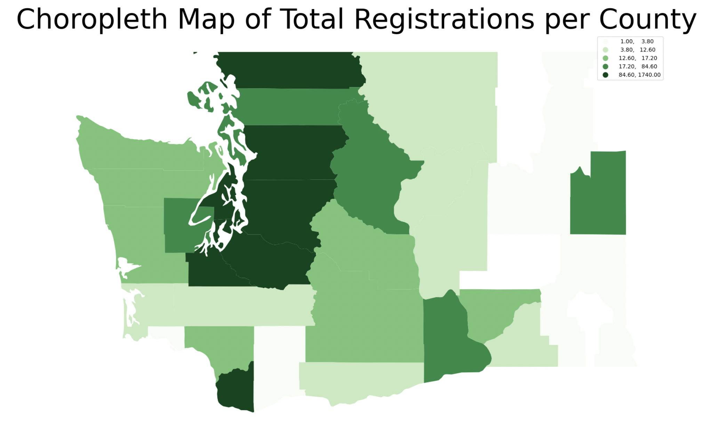
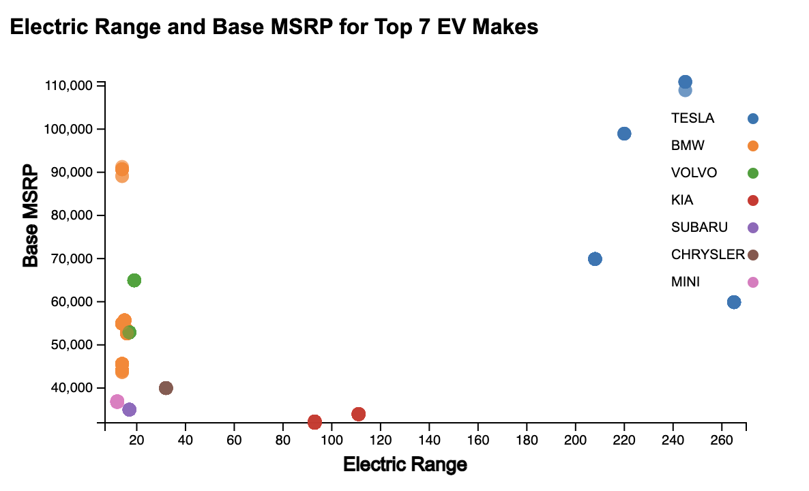

An Analysis of Electric Vehicles in the State of Washington
Project Introduction
With the worsening effects of climate change and global warming becoming
greatly apparent, people are looking for ways that they can individually
reduce their carbon footprint. According to the research article
“Electric
Vehicle Modelling for Future Technology and Market Penetration Analysis”, the
transportation sector is responsible for up to 25% of greenhouse gas emissions
globally. In the United States of America, cars are the primary mode of
transportation, and contribute to pollution through the emission of carbon
dioxide, a particularly harmful greenhouse gas.
To combat this issue, electric vehicles (EVs) have surged in popularity nationally, as
EVs utilize batteries or other sustainable fuel sources that avoid the carbon dioxide
emissions of traditional cars. Due to the increasing prevalence of EVs in the world,
questions have arisen as to the timeline and practicality of a mainstream adoption of EVs,
and how this transition will be imposed through policymaking. Current utilization of EVs
act as guides for consumer interests in the field, and identifies areas of concern in terms
of implementation, consumer acceptance, and accessibility.
Introduction to the Data
This project utilizes the "Electric Vehicle Population Dataset" from Kaggle. This
data set is updated annually and draws its data from the Washington State Department
of Licensing (DOL). It can be used to draw insights from electric vehicle usage in
the state, and how those findings may apply nationally to improve sustainability.
The data includes 17 columns and 166,800 rows. Of the 17 columns, 15 columns
represent categorical data, while 2 columns represent continuous data. Detailed
information about the features are listed in the following table:
| Dataset Attribute |
Attribute Description |
| VIN (1-10) |
First 10 characters of the vehicle's Vehicle Identification Number |
| County |
County of residence for registered vehicle owner |
| City |
City of residence for registered vehicle owner |
| State |
State of residence for registered vehicle owner |
| Postal Code |
5 digit zip code of residence of registered vehicle owner |
| Model Year |
Model year of vehicle, determined by VIN |
| Make |
Manufacturer of vehicle, determined by VIN |
| Model |
Specific version, or name, of the vehicle |
| Electric Vehicle Type |
Battery Electric Vehicle or Plug-in Hybrid Electric Vehicle |
| Clean Alternative Fuel Vehicle (CAFV) Eligibility |
Determines if vehicles is a CAFV based on House Bill 2042 |
| Electric Range |
How far a vehicle can travel on electric charge |
| Base MSRP |
Lowest Manufacturer's Suggested Retail Price for vehicle model |
| Legislative District |
Location of vehicle as represented in the state legislature |
| DOL Vehicle ID |
Identification number given to the vehicle by the DOL |
| Vehicle Location |
Center of zip code location of vehicle |
| Electric Utility |
Electric utility company associated with vehicle location |
| 2020 Census Tract |
Geographic identifier based on the 2020 United States Census |
While analyzing datasets where location plays a significant role, it is important to
visualize data according to its geographical information. Since our data focuses on
Washington state and provides the county of each registered vehicle, we utilized
geographical data from Natural Earth.
Following is a choropleth map utilizing geographic counties data and our dataset.

Our choropleth map illustrates the prevalence of electric vehicles in
the different counties in Washington State, where darker regions indicates
higher prevalence, and lighter regions indicates lower prevalence. This
visualization provides an overview of the location of our data and the
overall distribution of all registered electric vehicles.
Popularity of Electric Vehicle Types
Furthermore, we also want to explore the type of electric vehicle
that holds popularity within the state. As described in the attributes
table above, an EV can be classified as either a "Battery Electric Vehicle"
or a "Plug-in Hybrid Electric Vehicle". A
Battery Electric Vehicle is an EV that has an electric motor instead of a combustion engine, and is powered
solely by a battery pack. A Plug-in Hybrid Electric Vehicle
is an EV that has an electric motor powered by a battery, as well as a combustion
engine powered by another fuel source, such as gasoline.
The stacked bar chart above depicts the distribution of vehicle types for the ten counties
with the highest number of registered electric vehicles. The visualization includes
a tooltip feature that allows users to hover over the blue or red region of the bar and
see the Electric Vehicle Type, County, and the number of EVs of that type registered in
the county. Across all ten counties, the Battery Electric Vehicle tends to be more
popular than the Plug-in Hybrid Electric Vehicle. This information may be helpful for
EV manufacturers to understand what Electric Vehicle Types are most popular amongst consumers
and strive to meet demand.
Moreover, King County has significantly more electric vehicles than any other county;
interestingly, King County is also the wealthiest county in the state and it encompasses
the most highly populated city, Seattle. While the high number of registrations may
correlate primarily with the large population of Seattle, socioeconomic status may also
play a factor. Electric vehicles can be expensive, and out of budget for those in less wealthy
counties. Thus, if state governments would like to increase electric vehicle use for sustainability
reasons, they may consider subsidizing vehicles or targeting legislation promoting electric vehicles
to counties with lower EV registrations.
Locations of Registered Electric Vehicles State-Wide
Although understanding distributions of EVs by county is important, especially in understanding
regional differences, counties can be large areas of land where distribution is not even. For that reason,
it is important to observe the specific locations of electric vehicles in our dataset, as depicted
in the map below:
In this interactive visualization, each dot represents a registered EV in the state of Washington,
and clicking on a dot produces a popup for the user to view the Make and Model of the vehicle.
This map plots the coordinates of where each car is registered by latitude and longitude. Distribution
is concentrated strongly around major Washington cities such as Seattle, Tacoma, Everett, Olympia,
Yakima, Bremerton, Vancouver, and Spokane. We can see that for certain counties that appeared to
have high concentrations of EVs in the choropleth map, many of the vehicles were actually
concentrated in a city in the county, while the rest of the county has sparse distributions.
This distinction is vital, as it may provide local district lawmakers insight on where charging
stations may need to be installed or where accessibility to chargers may be improved.
Price Points for Electric Vehicles
As mentioned previously, a major obstacle to broad use of electric vehicles is the price point.
There is a public conception, which is sometimes true, that EVs are more expensive to purchase
than a typical gasoline fueled car. However, there is a different cost efficiency to EVs than
normal cars; despite the purchasing cost of the vehicle itself, owners save money on gas, and
do not have to worry about fickle gas prices that may change with the state of the economy.
Regardless, initial cost still matters to consumers, and our graph below aims to make buyers
aware of the various Base MSRPs for the top five most common Makes in Washington.
In this graph, the number of data points at each Base MSRP is plotted. Since Makes often have
unique features that place their products at different price points, we are able to color
each bar by which Make sells vehicles at that MSRP. The presence of multiple bars of the
same color indicates the range of price points within the same manufacturer. We offer tooltip and
interactivity that allows users to select a bar and gray out the rest of the bars, in order to
focus on the popularity of a vehicle at that Base MSRP value. This visualization allows
buyers to view how affordable electric vehicles are for electric vehicles, and how accessible each
car is to the average consumer.
Value of Electric Vehicles
Although price is a crucial factor in car purchasing decisions, other aspects of the vehicle
also hold importance. The range of the vehicle, describes how far a car can travel on a tank
of gas (for fuel-based vehicles) or on a full charge of the battery (for electric vehicles).
Concerns about how electric range compares to fuel range have proven to be important in the
electric vehicle discussion, as shown through
research by CSU San Bernardino. Ideally, the best value of an EV would have a lower Base MSRP
and higher electric range. The visualization below demonstrates the value of various EVs:

This scatter plot demonstrates the relationship between Base MSRP and Electric Range for
the top seven Makes in the dataset. Different points of the same color represent different
models from the same Make. Additionally, the more opaque a point, the more popular that model
is in the dataset.
As seen through the visualization, many Makes have models with varying values. Chrysler, Mini,
and Subaru models have both low Base MSRPs and low electric range, while BMW and Volvo models
display poor value, with high Base MSRPs and low electric ranges. KIA has models that are
good value, with medium-high electric ranges for low Base MSRPs. Tesla stands out from the
other Makes with extremely high electric range, though all have medium-high Base MSRPs. This
visualization should help buyers to evaluate their budgets and their personal priorities for
a car before making a purchase.
Conclusion and Future Work
Through this visualization analysis of our data, we addressed a variety of groups within the
electric vehicle field. For buyers, we offer information for them to assess price levels, make,
and electric range, in order to provide a guide for purchasing an EV. For manufacturers, we highlighted
the types of electric vehicles that customers are interested in and the areas of the state where
they might focus advertising efforts. For legislators, we demonstrated areas of inequality where
efforts to improve accessibility could drastically increase EV use, and lower carbon emissions.
From these visualizations, we hope that we may influence people to seriously consider electric
vehicles in their transportation decisions. This could help contribute to an overall global
sustainability initiative. With the rise and popularity of electric cars such as Tesla, it is
very possible that EVs can see an exponential increase in purchases.
Future work could explore EVs in a national or global context, and how consumers demographic
information correlates with EV use. Although an effective basis for the start of our research,
Washington cannot act as a benchmark for the entire United States of America, and insights from
one state may not apply to others. Our analysis of the data can also help future work determine
how and where to market electric vehicles to guarantee the most success for automotive companies.
Project by: Maya Sachidanand, Chapin Wilson, Celine Cerezci, Anushka Chandiramani